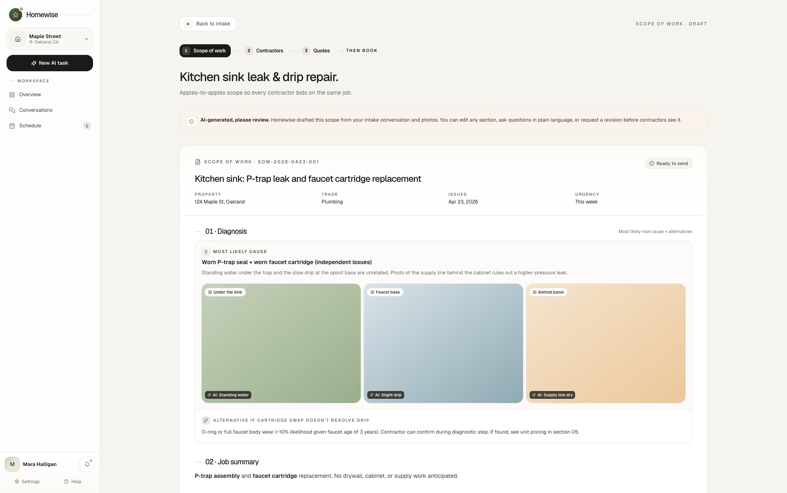
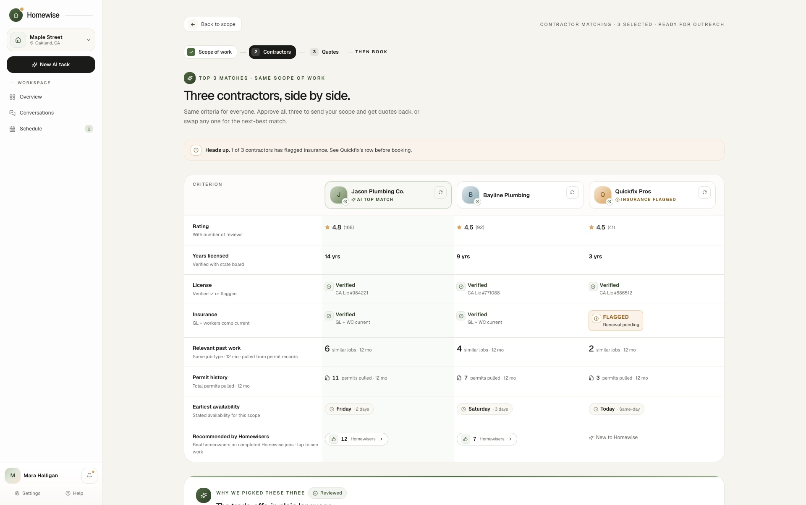
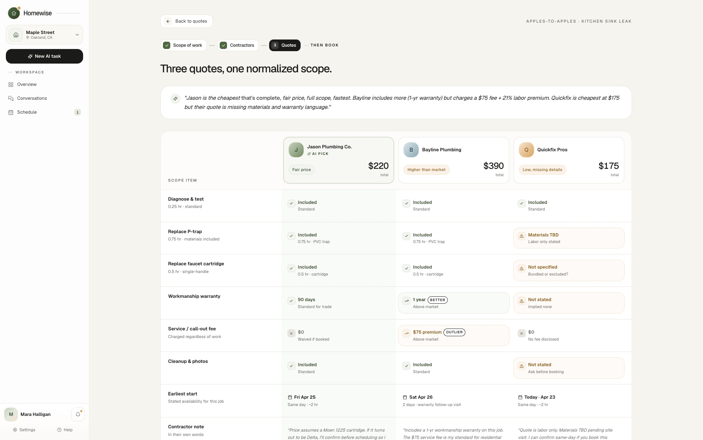
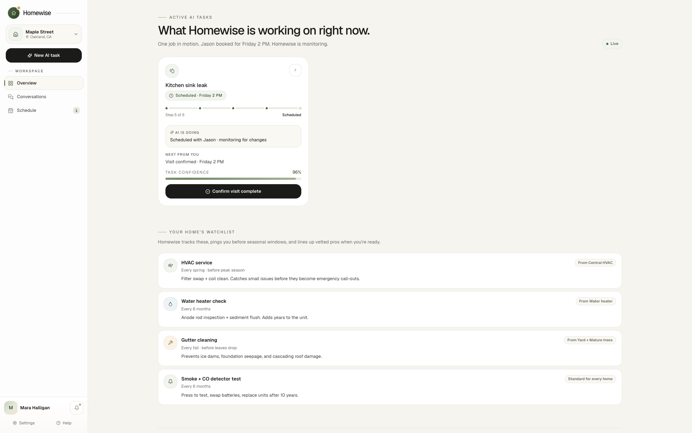
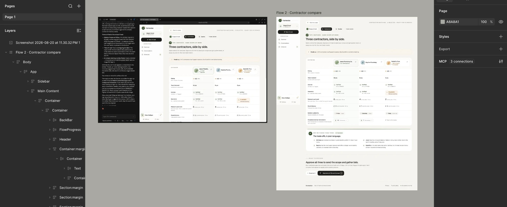

Project Type
Professional
Timeline
May – Jun 2026
Team
Lead Product Designer (Me)
2 Product Designers
7 Engineers
3 PMs
Tools
React + Tailwind
Claude Code
What I did
- Led the voice of customer research, 8 interviews synthesized into six findings that set the product's direction.
- Owned Hearth, the design system, and built it as living code, so consistency is enforced by the repo, not by review.
- Reviewed and merged the other two designers' pull requests, so every contribution extended Hearth instead of fragmenting it.
- Built the front end prototype in Claude Code, the full agent flow from scope to human approval, then handed the dev team the repo they shipped to production, with no Figma in between.
Problem
Hiring a contractor is a guessing game
Most homeowners already expect this to go wrong
Leaf Home / Morning Consult, 2025. HomeServe, 2025.
It is one of the most stressful purchases a homeowner makes, and eight interviews showed why. Trust starts social: people ask a neighbor or a friend first, because they assume online ratings can be gamed. When word of mouth runs out, they fall back on marketplaces they trust even less. Then the grind begins. They repeat the same problem to contractor after contractor, book visit after visit, and wait on quotes that come back impossible to line up against each other. Three frustrations surfaced in almost every interview.
No way to know who to trust
"Finding the right person is the hardest part."
No benchmark for a fair price
"You can't really know if the price is fair."
Comparing quotes is exhausting
"I had to make so many phone calls just to compare prices."
Insight
The price anxiety is really scope anxiety
Every homeowner unsure about price was actually unsure about scope. When contractors propose different fixes for the same issue, their quotes describe different work, so there is nothing to compare. One homeowner was quoted $250 to $7,000 for the same siding repair, and the telling part is that he had already worked out the answer: hire someone to diagnose and define the scope, then send that one scope out for comparable bids. He had described Homewise before we built it. Fix the scope, and the price becomes legible.
Interview 1 of 8 · same siding repair, 5 contractors quoted
Why this is hard
Trust was the hard part, not the automation
Three constraints shaped every decision that follows.
A user problem
Homeowners rarely know how to describe a repair, and they have no reason to trust the numbers that come back.
A data problem
Trust is a data problem as much as an AI one. Credible matching has to run on real license and permit records, not the model's best guess.
One connected system
One change ripples through scope, matching, quotes, and tracking, so nothing here could be designed as a single screen.
Solution
An agent that scopes the job before it shops it
Homewise acts on the reframe: scope first, price second. Neither the words nor the numbers is an automation problem. A chatbot would leave them guessing at both, so I pushed for a structured, human-in-the-loop workflow instead. Every step stays checkable: you approve the scope before it shops and the hire before it books, and the trust signals are public records rather than ratings.




Final Design
Define the scope, in plain language
You describe the problem in your own words. The agent turns it into a structured, editable scope of work, the most important artifact in the whole product.
The tradeoff
✕The version I didn't ship

The first intake could not say no. It asked for three shots, one click flipped to "Photos uploaded", and the conversation moved on with no photo ever checked. Nothing pushed back, and it felt fake.
✓Why it shipped this way

I rebuilt the intake to push back: the shipped chat is built to check the photo in front of you, a shot the agent cannot read gets rejected with advice for the retake, and the conversation moves only once it has what it needs. An agent that can say no is one you can believe.
One scope, every contractor
The same scope goes out to every contractor, so you stop repeating yourself on the phone and everyone quotes the exact same job. That only works if you believe the scope you are sending, which is where the first version failed.
The tradeoff
✕The version I didn't ship

The scope's diagnosis led with "92% confidence". Three of four testers asked what the number was based on, and every attempt to explain it, a one line source, then a step by step trail, just added chrome.
✓Why it shipped this way

I replaced the score with "Most likely cause", and the diagnosis with a local price benchmark does the trust work the number was not doing. A claim that can explain itself beats one that only sounds precise.
A match you can trust, not a list to sort
Homewise surfaces a verified, fairly priced match with its reasoning: verification on license, insurance, and real permit history, and how many Homewisers recommend them. Social proof, the way a neighbor refers someone, not an anonymous star rating. Ratings can be gamed. Permit records cannot.
The tradeoff
✕The version I didn't ship

The actions sat at the top of the page: reject all three, show three different, approve and send. It asked for a commitment before you had read a single row, and the swap icon on every column was decorative, wired to nothing.
✓Why it shipped this way

I moved Approve below the evidence into a "Ready to proceed" dock, so the decision comes after the read. Any column swaps for its next best match in one click, and an urgent job pulls bids back in 24 hours instead of five days. The page never asks for a yes it has not earned.
Compare apples to apples, then you sign off
Bids line up side by side with a plain language summary and outlier flags, the comparison homeowners reach for ChatGPT to fake today. The agent recommends, but nothing happens until you approve. A deliberate, human moment, never an autopilot default.
The tradeoff
✕The version I didn't ship

The first version topped the matrix with a "3 deviations flagged" headline and tucked contact under Approve as a small ghost link. The count didn't match the matrix, and four of four testers wanted the call first.
✓Why it shipped this way

I dropped the count and moved the flags into the cells they describe, and the summary names them: the $75 fee, the missing warranty language. "Ask before booking" became a full button above Approve, so the page reads ask first, then approve.
One place, from booking to done
Once a contractor is booked, the whole job lives on one dashboard. It tracks itself from scheduled to closed out, so it never slips back into scattered calls and texts.
The tradeoff
✕The version I didn't ship

The job's thread did not know when the job ended. With the work complete it still read "Live thread", the status still said awaiting your approval, and the suggested next step was still to approve Jason. The story stopped mid sentence.
✓Why it shipped this way

I made the thread the tracker. The agent narrates each step as it happens, booking confirmed, visit complete, work confirmed, and files what it produces as cards. When the work ends the ending is written in, and the thread flips to Completed. The story gets its ending.
A working prototype, not a mockup
Homewise is live and interactive.
Design System
Hearth, one warm system across every screen
Homewise runs on Hearth, its own design system. It reads like a calm, premium homeowner tool, closer to Notion or Linear than a SaaS dashboard, with a humanist warmth most AI brands skip.
The palette is read by role, not hue: sage for trust, ember for caution, sky for info, over a warm cream canvas and near black ink. Type is one typeface, Geist, on an editorial weight ladder capped at 52px, because larger sans starts to shout. Shadows are banned, so depth comes from a five tier surface ladder and hairlines instead. And it is living code, not a static spec: every new token ships behind a drift linter.
Process
I flipped the process and designed by building
Engineering used to be the slow part, so design got front-loaded and the build came last. Now the team can stand up a working version faster than I can finish a static mock, so I flipped the order and build first. Each loop starts from the PM's PRD, our shared intent: the problem, the users, and the metrics to move. The prototype exposes gaps the document cannot, which feed back into the PRD. Because Homewise is one connected system, I validated it live rather than trusting static mocks. Less time on mockups, more time on the calls only a person can make. I took this from Jenny Wen, Head of Design for Claude, who argues the design process is dead.
The traditional process
How I work now
Collaboration
We skipped Figma and built the design in code
Working closely with the PM and engineers, we made an unusual call: skip Figma and design in the codebase from day one, a real React prototype on Hearth. We handed the dev team the repo itself, and they built the real backend straight onto it. Skipping Figma did not close the door on it. The code stays the source of truth, and Figma is a step we reach for only when it earns its place.
The handoff, when the team wants one
Figma ships an official Claude Code plugin, installed with one command, that connects the two over MCP. Going in, it reads a file's components, variables and layout data. Coming out, it writes native Figma content straight onto the canvas, capturing the running interface as editable layers, a multi screen flow in a single pass with its sequence intact. The layer panel below is the part that matters. Body, App, Sidebar, Main Content, Header, each one selectable and editable, not a flat screenshot pasted onto a board.
claude plugin install figma@claude-plugins-official

See it running for real
A full walkthrough of the shipped build, four minutes.
Reflection
The design was not a picture of the product
Three rounds of usability testing over three weeks, with the same eight homeowners from the interviews, kept teaching one lesson: people only let the agent run when they could see the scope it built, the contractors it verified, and knew the final yes was still theirs. That is why the verification had to run on real records rather than the model's best guess. Building a front end prototype in Claude Code for the first time reframed the deliverable too. It was not a picture of the product. It was the first version of it.
One more thing
Version 2. The conversation carries the job, the board keeps the decisions
The finding
Usability testing on version 1 kept surfacing the same thing: people lost track of what they had agreed to.
The cause
One column carried the agent's narration and the user's decisions together, so every step the agent took pushed your approvals into scrollback.
The answer
Three panes. The conversation carries the process and keeps moving. The board holds the decisions and does not move.
From leak to booked visit, one take
Press play. Eighty seconds: the conversation on the left keeps moving, the decisions land on the right and stay.